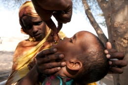

CERF: Funding pledges for emergency operations in 2014 increase by over 5 per cent
More than 40 Member States and Observers as well as regional organizations, private and individual donors today pledged over $404 million to support critical aid efforts around the world. The amount represents a 5.5 per cent increase compared to pledges made last year during the annual UN Central Emergency Response Fund High-Level Conference.
Addressing the conference, UN Secretary-General Ban Ki-moon called CERF “one of the most effective and efficient ways to support urgent aid needs” adding that “this year alone, CERF funds have kick-started urgent humanitarian operations in Syria, Mali and the Philippines.”
Since the launch of CERF in 2006, 124 counties have given more than $3.2 billion to the Fund to support life-saving aid efforts including the distribution of emergency food, water and shelter to millions of people in nearly 90 countries.
Last year alone, more than $473 million went to 14 UN agencies and the International Organization for Migration to help communities affected by disasters and conflicts in 45 countries. The largest allocation of over $80 million was for the Syria crisis.
Funding for emergencies
“CERF really does make a difference to people when they most need help,” said UN Humanitarian Chief Valerie Amos who addressed the conference from Lebanon where she is currently visiting communities affected by the crisis.
Speaking from the rooftop of a refugee camp hosting some 2,000 Palestinian refugees who had arrived from Syria in the last year, Ms. Amos urged donors “to continue to give generously to support CERF in 2014.”
The humanitarian chief had planned to be in Lebanon’s Bekaa region which is now home to more than 274,000 refugees from Syria. Extreme weather, including snow storms, has led to road closures in the area. “It’s cold, it’s snowing, the roads are closed and people are desperate for shelter,” she said, fearing for the wellbeing of the refugees.
New allocation for Central African Republic announced
Ms. Amos also announced today that she is allocating $10 million more to support desperately needed aid efforts in the Central African Republic where the entire population has been affected by the crisis, many facing violence and displacement. CERF has already given over $7 million for aid in the country this year.
“People are facing fear, insecurity and lack of stability. Women and children are particularly vulnerable. I hope these additional funds will bring some much needed relief,” she added.
Providing relief at the onset of crises
In 2013, funding from CERF has helped humanitarian agencies bring relief to communities at the onset of disasters and when the world’s attention shifts, leaving millions of people without adequate access to aid. Last month, when Typhoon Haiyan hit the Philippines affecting more than 14 million people, CERF funding brought clean water to families and helped to kick-start the removal of debris.
When polio returned to Yemen in August, which was declared free of the disease in 2006, CERF funding to the UN Children’s Fund (UNICEF) and the World Health Organization helped to immunize 3 million children.
That same month, the UN Food and Agriculture Organization received $5 million to help fight a locust plague in Madagascar. An estimated 13 million, including farmers, benefitted from the locust control campaign which treated over 1.5 million hectares of infested land, averting a food crisis.

{kind=link}